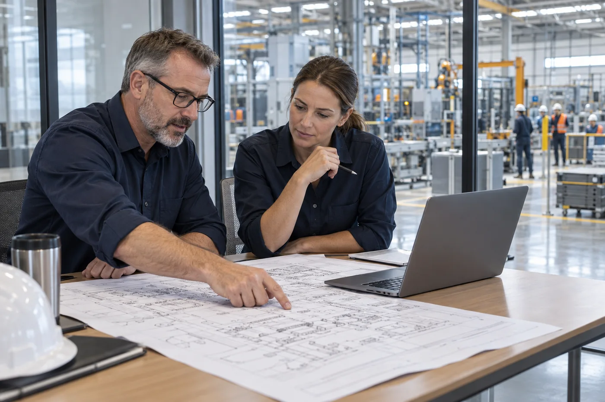
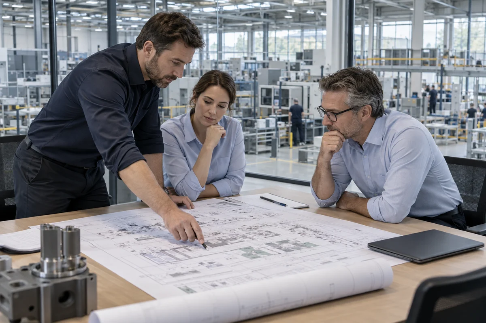
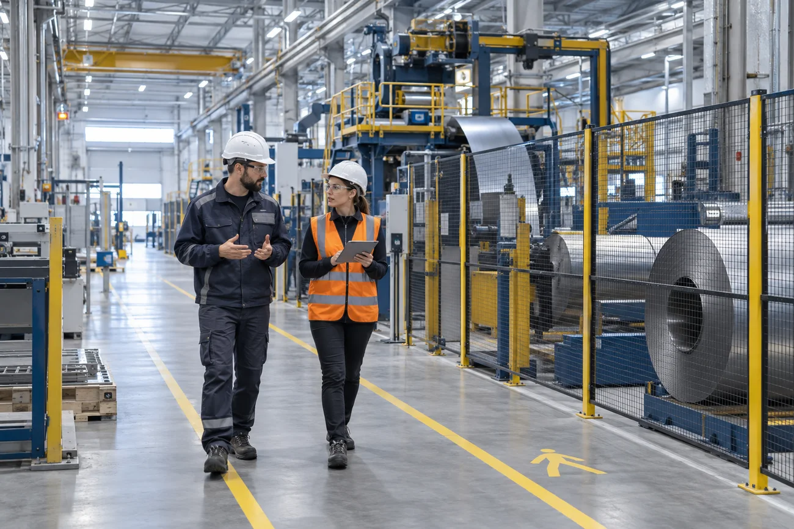
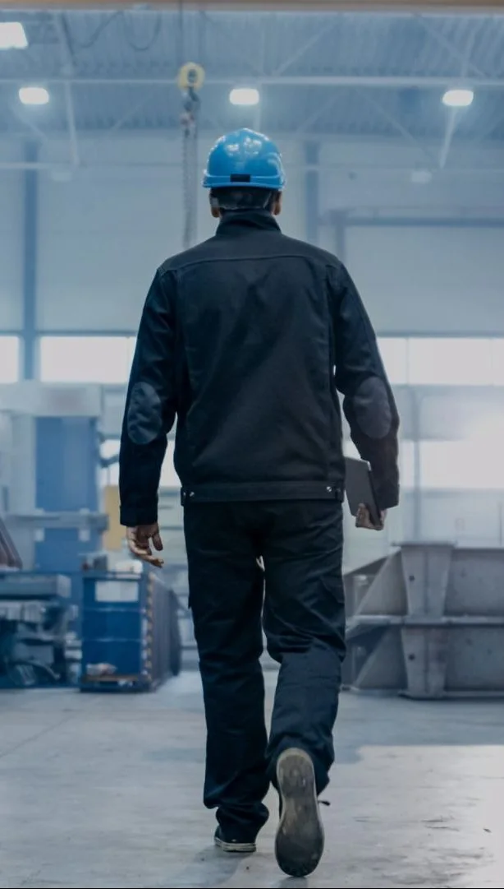

Automotriz y autopartes
Coordinación de recursos, secuencias y compromisos de entrega.

NOSOTROS / ANTAL M
Desde 1994, software y consultoría especializada para acompañar la evolución de tu manufactura.
Conoce nuestra experienciaUNA RELACIÓN DE TRABAJO
La tecnología aporta valor cuando las personas pueden utilizarla en su trabajo diario. Por eso, el proceso, el equipo y los objetivos forman parte de la conversación desde el inicio.

Conocemos el reto, los sistemas existentes y la forma en que tu equipo toma decisiones.
Conversamos sobre prioridades, responsabilidades y entregables para alinear expectativas.
Consideramos usuarios, capacitación y revisión del proceso dentro del alcance acordado.
ENTENDER PARA IMPLEMENTAR

Cada planta tiene su propia mezcla de productos, recursos y prioridades. Una solución útil necesita comprender ese contexto.
Trabajamos en la digitalización de la manufactura mediante herramientas de planeación, ejecución y calidad, acompañadas de consultoría para su implementación. La colaboración con los responsables del proceso permite conectar la tecnología con las decisiones que se toman cada día.
Nuestra experiencia comprende distintas industrias en México, Estados Unidos y Latinoamérica. Ese recorrido orienta una forma de trabajo centrada en las necesidades de cada operación.
TECNOLOGÍA INDUSTRIAL
Somos partner de Siemens Digital Industries Software. Sumamos soluciones de software industrial a una implementación que considera tus procesos, sistemas y requerimientos.
Explorar nuestras soluciones ↗
CONFIANZA QUE SE CONSTRUYE EN PLANTA
Algunos de nuestros clientes


EXPERIENCIA MULTISECTORIAL
Experiencia en sectores con retos de producción diferentes. El alcance se define a partir de la realidad de cada planta.

Coordinación de recursos, secuencias y compromisos de entrega.
Planeación de producción, materiales y capacidad de proceso.
Organización de pedidos y asignación de equipos.
Visibilidad sobre capacidades y restricciones de manufactura.
Programación de operaciones, herramentales y centros de trabajo.
CONSULTORÍA E IMPLEMENTACIÓN
Antes de configurar una solución, hay que entender cómo se planea, cómo se ejecuta y dónde se pierde visibilidad.
Entender
Revisamos cómo fluye el trabajo, qué sistemas intervienen y cuáles son las restricciones que conviene atender primero.
Retos · información disponible · objetivosDefinir
Alineamos requerimientos, intercambios de datos y criterios para configurar la solución alrededor de tu operación.
Sistemas · responsabilidades · configuraciónImplementar
Contrastamos la configuración con los procesos acordados y revisamos el comportamiento antes de incorporarla al trabajo cotidiano.
Revisión funcional · ajustes · puesta en operaciónAcompañar
La adopción requiere seguimiento. El soporte y la mejora continua permiten responder a los cambios del proceso.
Equipo · seguimiento · mejora continuaNUESTRA FILOSOFÍA
MISIÓN
Optimizar los procesos de manufactura de nuestros clientes mediante soluciones de software y consultoría especializada en planeación, programación y control de producción.
VISIÓN
Ser un aliado en la digitalización y la innovación de la manufactura en México y el mundo, contribuyendo a mejores procesos y a una mejor industria.
Explorar soluciones que respondan a la evolución de la manufactura.
Construir relaciones con claridad y responsabilidad.
Dar seguimiento a las necesidades de cada proyecto.
Trabajar de cerca con quienes conocen el proceso.
CONVERSEMOS SOBRE TU OPERACIÓN